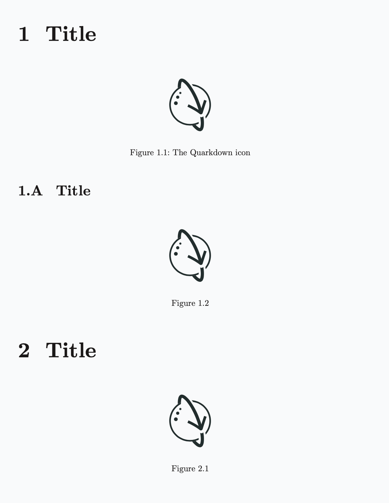
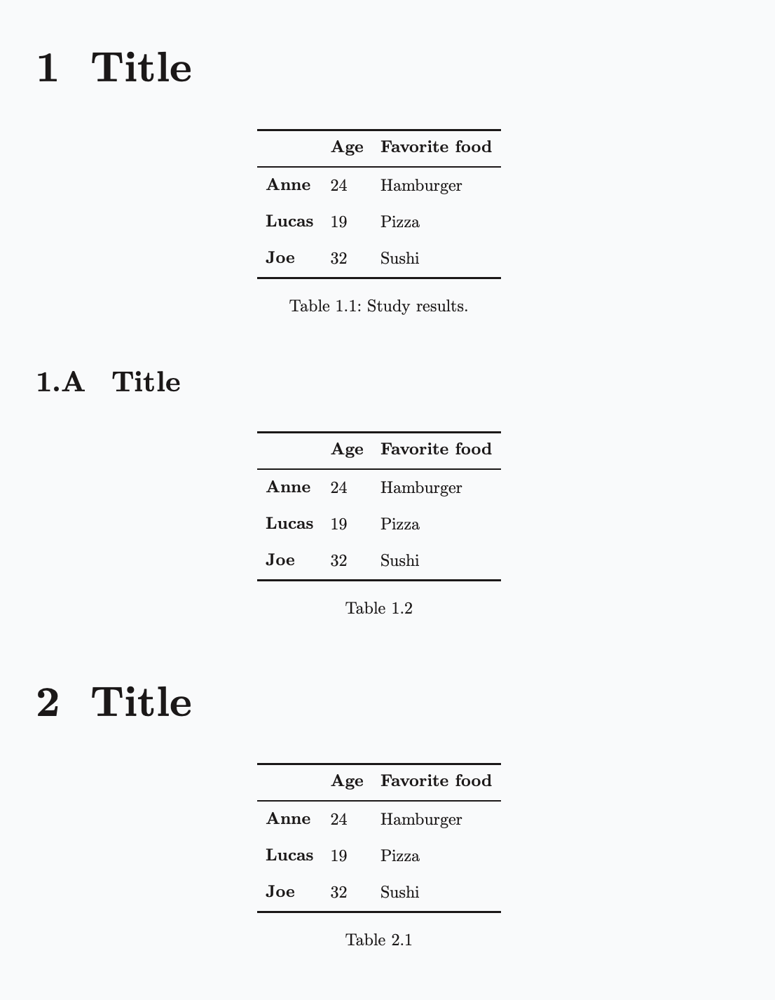
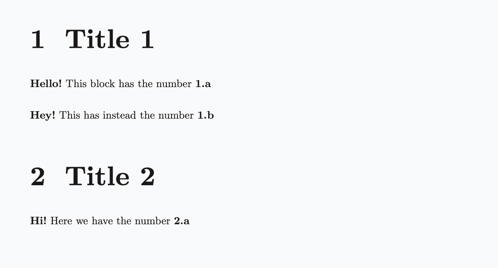

/

On this page
Numbering
The .numbering function sets the global numbering configuration of the document. The following elements can be numbered:
- Headings and table of contents entries
- Figures
- Tables
- Equations
- Code blocks
- Footnotes
- Custom elements (
.numbered)
The configuration is represented by a Dictionary. The following snippet shows the full configuration schema, where all entries are optional:
.numbering
- headings: <format>
- figures: <format>
- tables: <format>
- equations: <format>
- code: <format>
- footnotes: <format>Each format parameter accepts either none or a string where each character represents either a counter or a fixed symbol:
1for decimal (1, 2, 3, ...)afor lowercase latin alphabet (a, b, c, ...)Afor uppercase latin alphabet (A, B, C, ...)ifor lowercase roman numerals (i, ii, iii, ...)Ifor uppercase roman numerals (I, II, III, ...)- A backslash (
\) escapes the next character, treating it as a fixed symbol. For example,\1produces a literal1instead of a decimal counter. - Any other character is a fixed symbol.
Default formats
The default numbering format, if unspecified, is:
For
pageddocuments:1.1.1for headings1.1for figures and tables(1)for equations1for footnotes
For
plaindocuments:(1)for equations1for footnotes
For
slidesanddocsdocuments:1for footnotes
You can turn off any active numbering configuration via the .nonumbering function.
Merging configurations
By default, .numbering enhances the current numbering configuration by merging the new configuration with the existing one. This means only the specified entries are updated while the rest remain unchanged.
To avoid merging and turn off numbering rules for unspecified entries, set the merge:{no} argument:
.numbering merge:{no}
- figures: 1.1Headings
Example 1
.numbering
- headings: 1.A.a
## Title <!-- 1 -->
### Title <!-- 1.A -->
#### Title <!-- 1.A.a -->
#### Title <!-- 1.A.b -->
##### Title <!-- None -->
### Title <!-- 1.B -->
## Title <!-- 2 -->
### Title <!-- 2.A -->

Excluding headings from numbering
To prevent a heading from being numbered, you can either:
- Use a decorative heading (
#!,##!, etc.), which also excludes the heading from the table of contents. - Use the
.headingfunction withnumbered:{no}for more granular control, allowing you to independently decide whether the heading appears in the table of contents.
Figures
Figures are numbered only if they have a caption, which may also be empty.
Example 2
```markdown
.numbering
- headings: 1.A.a
- figures: 1.1
## Title

### Title

## Title

```
Tables
Example 3
.numbering
- headings: 1.A.a
- tables: 1.1
## Title
| | Age | Favorite food |
|-----------|-----|---------------|
| **Anne** | 24 | Hamburger |
| **Lucas** | 19 | Pizza |
| **Joe** | 32 | Sushi |
"Study results."
### Title
| | Age | Favorite food |
|-----------|-----|---------------|
| **Anne** | 24 | Hamburger |
| **Lucas** | 19 | Pizza |
| **Joe** | 32 | Sushi |
## Title
| | Age | Favorite food |
|-----------|-----|---------------|
| **Anne** | 24 | Hamburger |
| **Lucas** | 19 | Pizza |
| **Joe** | 32 | Sushi |
Equations
Math blocks (equations) are numbered only if they have a cross-reference ID.
Example 4
.numbering
- equations: (1)
$ E = mc^2 $ {#energy}
$ F = ma $ {#force}Conventionally, if the equation is not cross-referenced anywhere in the document, but you still want it to be numbered, you can use _ as the ID.
Example 5
$ E = mc^2 $ {#_}
$ F = ma $ {#_}Code blocks
Example 6
.numbering
- code: 1
```python
def hello():
print("Hello, world!")
```
```kotlin
fun main() {
println("Hello, world!")
}
```Footnotes
The numbering format of footnotes is flat, meaning it only considers the leftmost symbol and ignores the rest.
If not specified, footnotes format defaults to 1 (decimal).
Example 7
.numbering
- footnotes: i
Here is a footnote reference[^: First], and another one[^: Second].
Custom numbered elements
Along with the built-in numerable elements discussed above, Quarkdown allows any element to be numbered if wrapped in a .numbered block.
The function accepts two arguments:
- A key string. The element’s number is counted across previous occurrences with the same key.
- A lambda block that takes the number as an argument, formatted according to the active numbering format.
.numbered {greetings}
number:
**Hello!** This block has the number **.number**Executing the previous block renders an empty string in place of number because you need to specify the numbering format for greetings in the .numbering call:
.numbering
...
- greetings: 1.aA numbered block can also be cross-referenced. See Cross-references for details.
Full example:
Example 8
.numbering
- headings: 1.1
- greetings: 1.a
## Title 1
.numbered {greetings}
number:
**Hello!** This block has the number **.number**
.numbered {greetings}
number:
**Hey!** This has instead the number **.number**
## Title 2
.numbered {greetings}
number:
**Hi!** Here we have the number **.number**
Localization
The localized name of the labeled element appears in captions if .doclang is set and the locale is supported. For instance, Figure and Table for the English locale, Figura and Tabella for Italian.